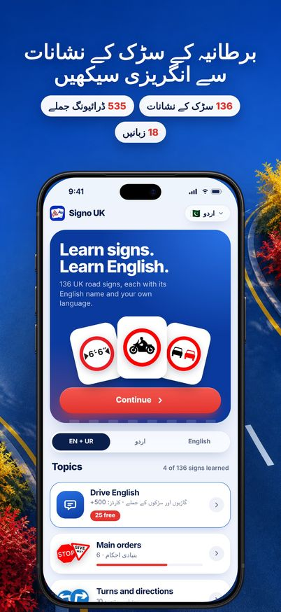
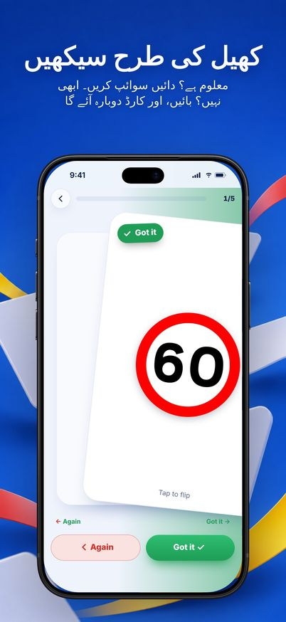
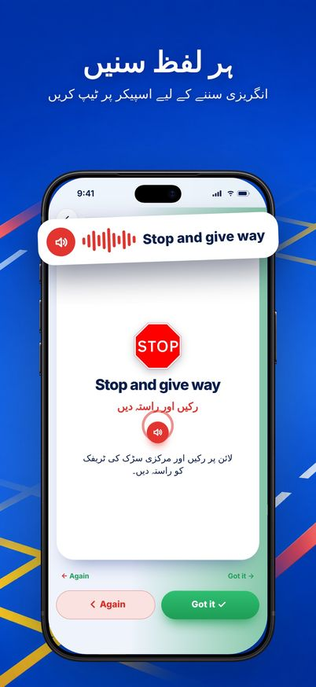
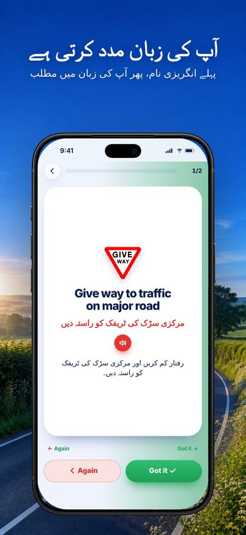
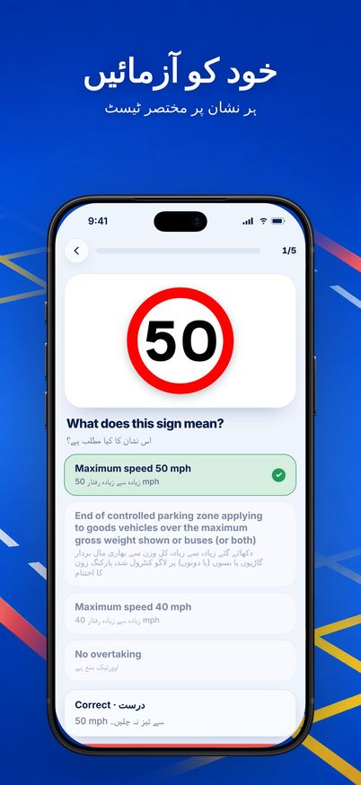
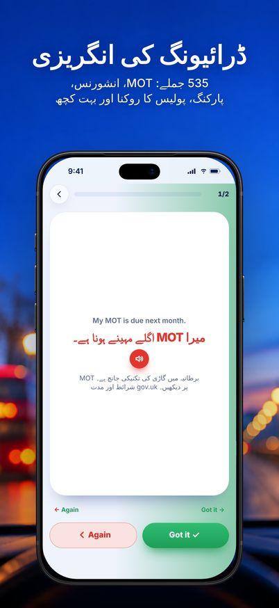
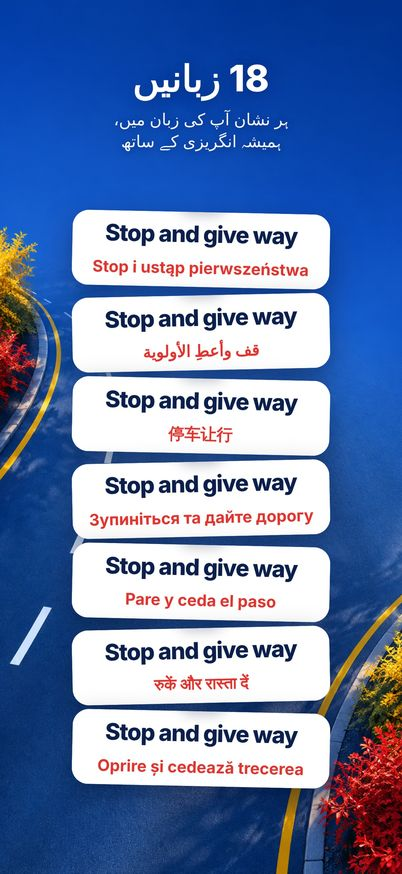
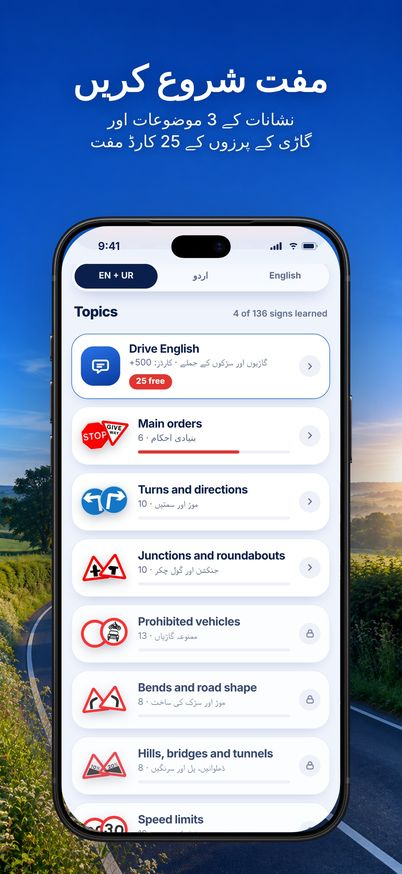

برطانیہ کے ٹریفک سائن، اردو میں
ہر سائن کا مطلب اور اس کا انگریزی نام۔ Signo ایک iPhone ایپ ہے: برطانیہ میں ڈرائیونگ کے لیے 136 سائنز اور 535 جملے، اردو وضاحت کے ساتھ۔
App Store سے ڈاؤن لوڈ کریںمفت: سائنز کے 3 موضوعات اور گاڑی کے پرزوں کے 25 الفاظ۔ Signo Pro سب کچھ کھول دیتا ہے۔


کھیل کی طرح سیکھیں
سائن آتا ہے تو دائیں سوائپ کریں، نہیں تو بائیں، وہ دوبارہ آئے گا۔ ہر انگریزی نام برطانوی آواز میں سنیں، پھر چھوٹا سا ٹیسٹ دیں۔








عام سائنز اور ان کا مطلب
وضاحت دیکھنے کے لیے سائن پر ٹیپ کریں۔
- رکیں اور راستہ دیںStop and give way
 مرکزی سڑک کی ٹریفک کو راستہ دیںGive way to traffic on major road
مرکزی سڑک کی ٹریفک کو راستہ دیںGive way to traffic on major road گاڑیوں کا داخلہ منع ہےNo entry for vehicular traffic
گاڑیوں کا داخلہ منع ہےNo entry for vehicular traffic قومی رفتار کی حد لاگو ہےNational speed limit applies
قومی رفتار کی حد لاگو ہےNational speed limit applies- زیادہ سے زیادہ رفتار 30 mphMaximum speed 30 mph
 زیادہ سے زیادہ رفتار 20 mphMaximum speed 20 mph
زیادہ سے زیادہ رفتار 20 mphMaximum speed 20 mph زیادہ سے زیادہ رفتار 40 mphMaximum speed 40 mph
زیادہ سے زیادہ رفتار 40 mphMaximum speed 40 mph زیادہ سے زیادہ رفتار 50 mphMaximum speed 50 mph
زیادہ سے زیادہ رفتار 50 mphMaximum speed 50 mph زیادہ سے زیادہ رفتار 60 mphMaximum speed 60 mph
زیادہ سے زیادہ رفتار 60 mphMaximum speed 60 mph 20 mph زون میں داخلہEntry to 20 mph zone
20 mph زون میں داخلہEntry to 20 mph zone اوورٹیک منع ہےNo overtaking
اوورٹیک منع ہےNo overtaking دائیں مڑنا منع ہےNo right turn
دائیں مڑنا منع ہےNo right turn بائیں مڑنا منع ہےNo left turn
بائیں مڑنا منع ہےNo left turn یو ٹرن منع ہےNo U-turns
یو ٹرن منع ہےNo U-turns بائیں رہیںKeep left
بائیں رہیںKeep left چھوٹا گول چکرMini-roundabout
چھوٹا گول چکرMini-roundabout- آگے گول چکرRoundabout ahead
 تمام گاڑیاں منع ہیںAll vehicles prohibited
تمام گاڑیاں منع ہیںAll vehicles prohibited موٹر گاڑیاں منع ہیںNo motor vehicles
موٹر گاڑیاں منع ہیںNo motor vehicles مرکزی کیریج وے پر رکنا منع ہےNo stopping on main carriageway
مرکزی کیریج وے پر رکنا منع ہےNo stopping on main carriageway صرف بسوں، سائیکلوں اور ٹیکسیوں کے لیے راستہRoute for use by buses, pedal cycles and taxis only
صرف بسوں، سائیکلوں اور ٹیکسیوں کے لیے راستہRoute for use by buses, pedal cycles and taxis only کنٹرول شدہ پارکنگ زون میں داخلہEntrance to controlled parking zone
کنٹرول شدہ پارکنگ زون میں داخلہEntrance to controlled parking zone صرف پرمٹ رکھنے والوں کے لیےPermit holders only
صرف پرمٹ رکھنے والوں کے لیےPermit holders only صرف معذوری بیج رکھنے والوں کے لیےDisabled badge holders only
صرف معذوری بیج رکھنے والوں کے لیےDisabled badge holders only پارکنگ کی جگہParking place
پارکنگ کی جگہParking place اسپیڈ کیمرےSpeed cameras
اسپیڈ کیمرےSpeed cameras رکیں – پولیسStop - Police
رکیں – پولیسStop - Police وہ مقام جہاں سے موٹر وے کے قوانین لاگو ہونا شروع ہوتے ہیںPoint at which motorway regulations start to apply
وہ مقام جہاں سے موٹر وے کے قوانین لاگو ہونا شروع ہوتے ہیںPoint at which motorway regulations start to apply آگے ٹریفک سگنلTraffic signals ahead
آگے ٹریفک سگنلTraffic signals ahead زیبرا کراسنگZebra crossing
زیبرا کراسنگZebra crossing آگے اسکول یا کھیل کے میدان جانے یا آنے والے بچےChildren going to or from school or playground ahead
آگے اسکول یا کھیل کے میدان جانے یا آنے والے بچےChildren going to or from school or playground ahead سڑک کا کامRoad works
سڑک کا کامRoad works پھسلنے والی سڑکSlippery road
پھسلنے والی سڑکSlippery road آگے گیٹ یا بیریئر والی ریلوے کراسنگLevel crossing with gate or barrier ahead
آگے گیٹ یا بیریئر والی ریلوے کراسنگLevel crossing with gate or barrier ahead آگے بغیر گیٹ یا بیریئر والی ریلوے کراسنگRailway level crossing without gate or barrier ahead
آگے بغیر گیٹ یا بیریئر والی ریلوے کراسنگRailway level crossing without gate or barrier ahead مخالف سمت سے آنے والی گاڑیوں کو ترجیح دیںGive priority to vehicles from opposite direction
مخالف سمت سے آنے والی گاڑیوں کو ترجیح دیںGive priority to vehicles from opposite direction مخالف سمت سے آنے والی گاڑیوں پر ٹریفک کو ترجیح حاصل ہےTraffic has priority over oncoming vehicles
مخالف سمت سے آنے والی گاڑیوں پر ٹریفک کو ترجیح حاصل ہےTraffic has priority over oncoming vehicles دکھائی گئی اونچائی سے اونچی گاڑیاں منع ہیںNo vehicles over height shown
دکھائی گئی اونچائی سے اونچی گاڑیاں منع ہیںNo vehicles over height shown آگے ٹی جنکشنT-junction ahead
آگے ٹی جنکشنT-junction ahead آگے چوراہاCrossroads ahead
آگے چوراہاCrossroads ahead ایک لین کی سڑکSingle track road
ایک لین کی سڑکSingle track road گزرنے کی جگہPassing place
گزرنے کی جگہPassing place
گاڑی کے پرزے انگریزی میں
مفت Drive English باب کے 25 الفاظ۔ سننے کے لیے لفظ پر ٹیپ کریں۔
تمام 136 سائنز ایپ میں ہیں
مفت: سائنز کے 3 موضوعات اور گاڑی کے پرزوں کے 25 الفاظ۔ Signo Pro سب کچھ کھول دیتا ہے۔